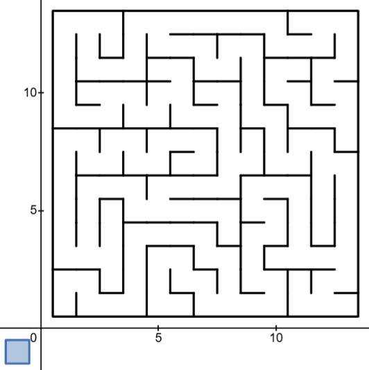

A maze is a puzzle consisting of twisting paths, forks, and walls requiring the player to navigate from a start to a target destination.

One way of generating a (rectangular) maze is to run depth first search on a rectangular grid of cells. The graph linked above implements this technique. The blue button in the bottom left resets and causes a new random maze to be generated.